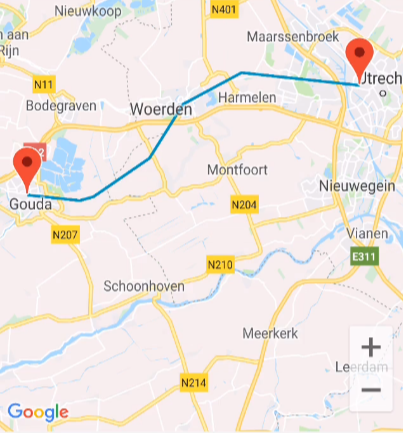
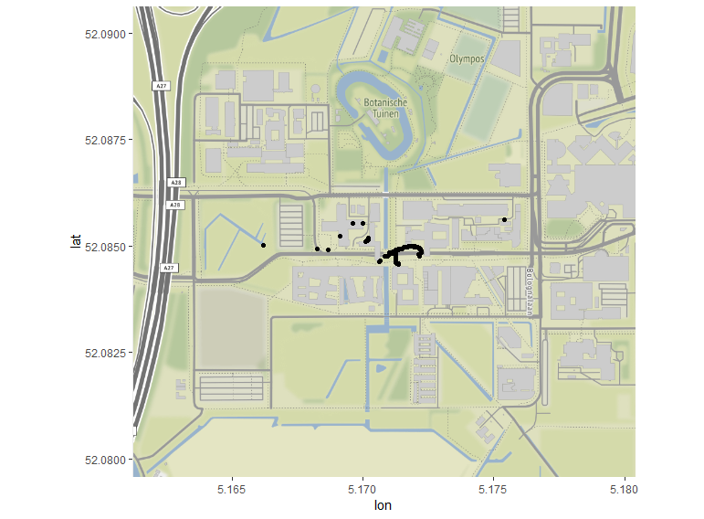

Improving transportation research with passively-collected location data
Danielle McCool Peter Lugtig, Barry Schouten, Ole Mussmann
2019-03-04
Sensor data projects from WIN
- Travel/mobility
- Time use
- Budget expenditure
- Fitness/physical activity
This projet
We record always-on passive location data
from mobile devices
for the Ministry of Infrastructure
to supplement existing travel diary studies
to replace existing travel diary studies
CBS travel app
CBS in-house programmer (intern)
Field test 11/2018 – 12/2018
1902 letters
CBS field test data
Data being digested by:
- 2 Research Masters students
- 3ish interns
- Handful of programmers
- At least two professors
- 1 PhD student
Stops

User-supplied motive
User-supplied name
Tracks

Only get a transport mode
üö¥ üöó üöÅ
Important bits
Device information
Location data
Track data
Stop data
Daily Questions
Important bits
- Location data
- Track data
- Stop data
Location data
- High-tracking mode: 1 measurement per second
- Low-tracking mode: 1 measurement per minute
Track data
- Start time
- Stop time
- Transportation mode
Stop data
- Start time
- Stop time
- Stop name
- Stop motive
Interesting challenges
Incomplete data
Device differences
Strange sensor measurements
Sensitivity vs. battery life
What is a stop
What is a stop?

What is a stop (lvl 2)

What is a stop (lvl 3)

Not a stop
- Waiting at a stoplight
- Being stuck in traffic
- Switching Wi-Fi on and having your position change
A stop
- Going from one building to another on campus
- Taking your dog to the dog park
- Dropping your kid off at school
???
- Waiting for your train at the station
- Taking your dog for a walk
- Going to ask the neighbors for your package
Our stop definition
Two levels
- Data collection
- User interface
Data collection
Parameters trigger ‘high-tracking’ and ‘low-tracking’ modes on the device.
- Distance Delta Limit
- Time period within that radius
User interface
- Grouping radius
- Time
- Minimum Stop Accuracy
- Stop merge radius
- Stop merge max travel radius
Grouping radius parameter

Time parameter

Better interpretation

Missing data
Missing data occurs at myriad levels within this data.
- Recruitment (Willingness)
- App/device incompatibility (?)
- App installation (Compliance)
- App closes itself (?)
- App only has location on Wi-Fi or GPS
- Device dies
- Short losses due to tunnels or buildings
- Filling in the user-generated data (Attrition)
Missing data in the recruitment phase

Missing data over time per OS

Missing data within a day

Missing data within a trip

Next steps
PhD project consists of five projects (2018-2021):
- A descriptive paper over the app
- Adjustment for missing data in CBS verplaatsingen app
- Adjustment for measurement error/inaccurate measurements in CBS verplaatsingen app
- Two projects linked to time-use sensor data
Thanks! Questions?
Summary
- Goal: critically examine app as diary replacement
- Field test had over 600 respondents
- Self-reported stops are difficult to reproduce programmatically
- Lots of flavors of missingness
- Immediate issues: reporting distance to the stakeholders
Like to know more? d.m.mccool@uu.nl